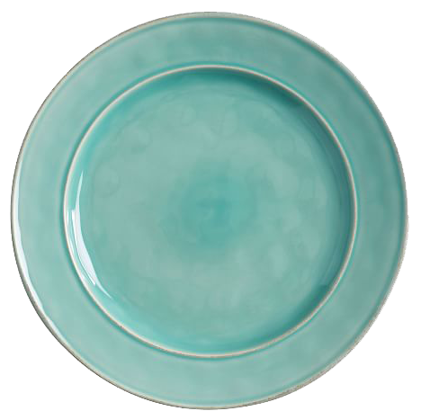

Eat Your Vegetables!
Any vegetable or 100% vegetable juice counts as a member of the Vegetable Group. Vegetables may be raw or cooked; fresh, frozen, canned, or dried/dehydrated; and may be whole, cut-up, or mashed.


Any vegetable or 100% vegetable juice counts as a member of the Vegetable Group. Vegetables may be raw or cooked; fresh, frozen, canned, or dried/dehydrated; and may be whole, cut-up, or mashed.